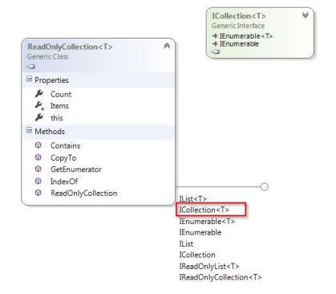
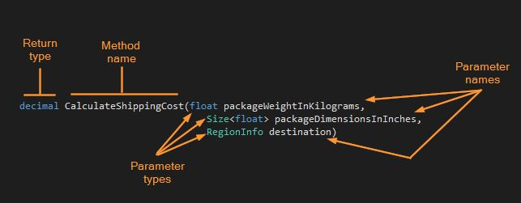
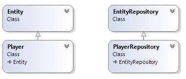
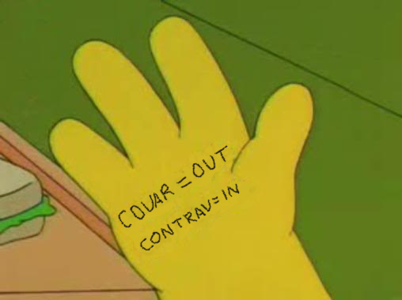

Subtype must always
be substitutable for
a Base type.
ReadOnlyCollection implements ICollection

Consume any implementation without changing the correctness of the system.
If S is a subtype of T,
then objects of type T may be replaced with objects of type S, without breaking the program.
— Barbara Liskov
IS-A is about behavior
Validity is not intrinsic:
A model, viewed in isolation,
cannot be meaningfully validated.

Expresses the constraints under which a routine will function properly
Expresses properties of the state resulting from a routine’s execution
A predicate that remains true for the lifetime of an object
1: 2: 3: 4: 5: 6: |
|
How subtyping between more complex types relates to subtyping between their components.


Covariance
1:
|
|
Contravariance
1:
|
|
No new exceptions are allowed
1: 2: 3: 4: 5: |
|
1: 2: 3: 4: 5: 6: 7: 8: 9: 10: 11: 12: 13: 14: 15: 16: 17: 18: 19: 20: |
|
1: 2: 3: 4: 5: 6: 7: 8: 9: |
|
Clients should not be forced
to depend on methods
they do not use
Favor Role Interfaces over the usual "extracted interfaces"
Very unlikely that you build a second class that implements a "extracted interface"
Extreme Role Interfaces have a single method
1: 2: 3: 4: 5: |
|
1: 2: 3: 4: 5: 6: 7: 8: |
|
1: 2: 3: 4: 5: 6: 7: 8: 9: 10: 11: 12: |
|
1: 2: 3: 4: 5: 6: 7: 8: 9: 10: 11: 12: 13: 14: |
|
1: 2: |
|
Objects are Poor's man Closures
Objects are Poor's man Closures
Closures are Poor's man Objects